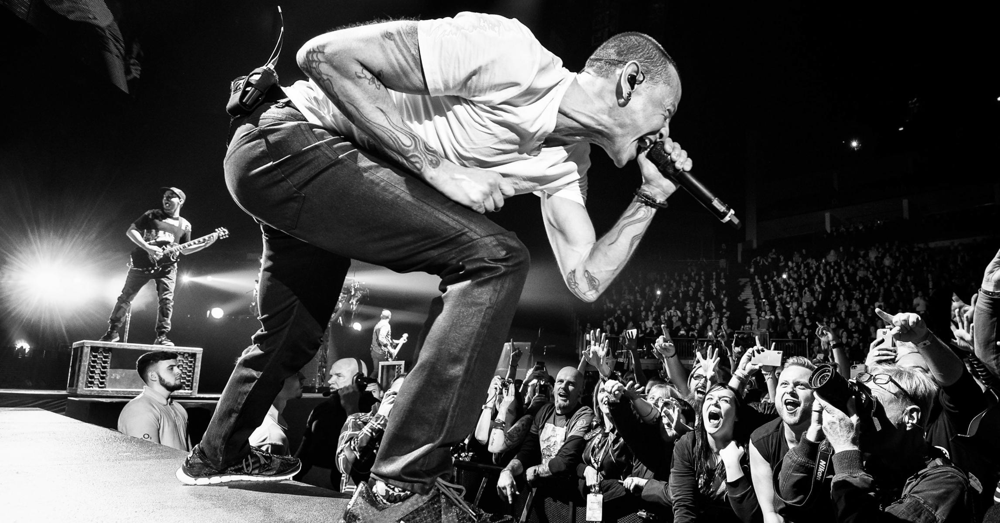

Best rock artist that ever lived, your angel voice and your rockin soul. Thank you Chester, you will be forever in our hearts.Fans

Chester singing to his fans.
Timeline of Chester Bennington
- 1976 - Chester Bennington was born on March 20th in Phoenix, Arizona
- 1993 - Bennington first began singing with a band called Sean Dowdell and His Friends. Together they released an eponymous three-track cassette in 1993. Later, Dowdell and Bennington moved on to form a new band, Grey Daze, a post-grunge band from Phoenix, Arizona. The band recorded a demo in 1993 and two albums: Wake me in 1994, and Sun Today in 1997. Bennington left Grey Daze in 1998.
- 2000 - Linkin Park released their debut album, Hybrid Theory, through Warner Bros. Records. Bennington and Shinoda wrote the lyrics to Hybrid Theory based on some early material.[6] Shinoda characterized the lyrics as interpretations of universal feelings, emotions, and experiences, and as "everyday emotions you talk about and think about.
- 2003 - MTV named Linkin Park the sixth-greatest band of the music video era and the third-best of the new millennium. Billboard ranked Linkin Park No. 19 on the Best Artists of the Decade chart
- 2005 - Bennington co-founded Dead by Sunrise, an electronic rock band from Los Angeles, California, with Orgy and Julien-K members Amir Derakh and Ryan Shuck. Dead by Sunrise made their live debut in May 2008, performing at the 13th anniversary party for Club Tattoo in Tempe, Arizona.
- 2009 - The band released their debut album Out of Ashes on October 13
- 2017 - While on vacation in Arizona with his wife and family, Bennington returned home alone saying he had work to do. Shortly before 9:00 a.m. PDT on July 20, Bennington was found dead by his housekeeper at his home in Palos Verdes Estates, California. His death was ruled a suicide by hanging. Bennington left no suicide note. Bandmate and close friend Mike Shinoda confirmed his death on Twitter, writing, "Shocked and heartbroken, but it's true.

If you have time and want to learn more about the life of Chester Bennington, please click here.